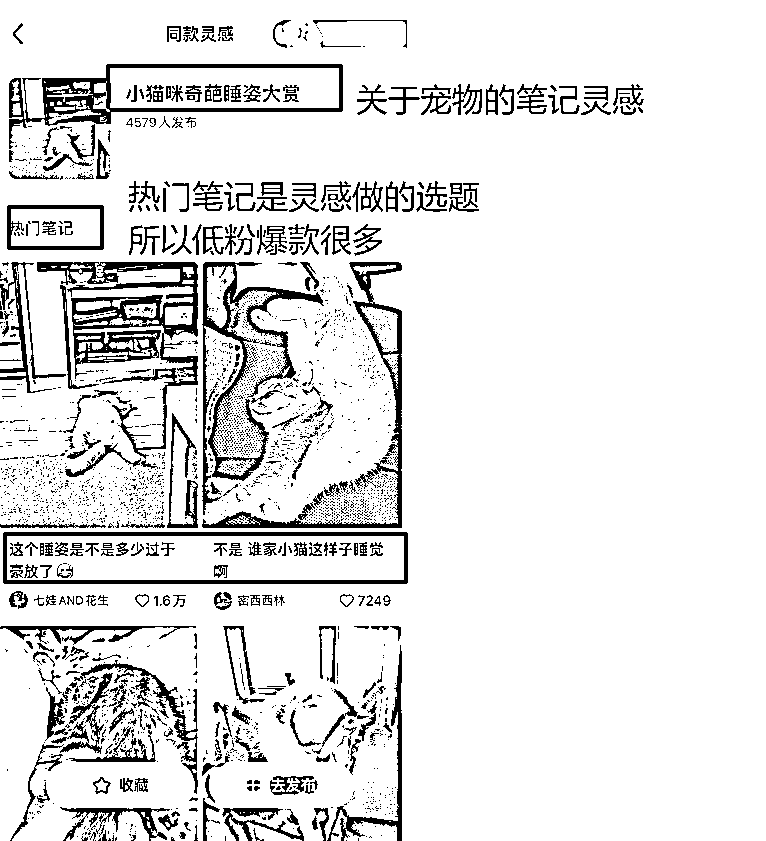

来源：https://go6xq64elg.feishu.cn/docx/CZXQdL01EoaqF2xhkpJcD7j3n3c
哈喽，我是曜文
拥有200多家小红书店铺，在小红书上面深耕五年，在开始前，一起来看几个问题
你是不是做小红书的时候明明按照对标的爆款参考却小眼睛还是几十几百一周出不了三单？
你是不是做小红书的时候绞尽脑汁想文案测封面还是数据平平始终突破不了一千？
你是不是每天都花了五六个小时做了半个多月还是一单不出拿不到正反馈？
如果有这种情况，那今天咱们就一起来聊聊小红书店铺的爆款逻辑，让你更容易抓住爆款增加起店率爆款率
下面，咱们从几个维度来聊聊为什么笔记为什么能成为爆款和哪些方面有关联
1、笔记为什么会成为爆款笔记
2、爆款笔记从哪几个维度分析
3、如何优化提升爆款率找到爆款逻辑
笔记成为爆款的因素有几个方面
首先做爆款笔记前，电商会涉及到品的问题，品是实时的爆品，能加速成为爆款笔记的进度，如果品不是爆品则需要时间来提升账号的各方面数据来打造成爆品。
实时爆品，是近七天销量上千，并且各平台都相对比较有热度
打造爆品，是做好账号的各项指标从而获取更多流量成为爆品
1.账号权重
什么是账号权重？
我用更加直白的做个解释，就是这个账号的等级，你的账号等级越高发的笔记能获得更多的流量，也可以理解，这个账号为社区做的贡献越多每天在线发笔记做贡献他就会给你多一点的流量，但是这个等级是看不到的，官方也不会明说你给我贡献内容我就给你更多的流量，只能通过笔记的数据来测试来通过小眼睛来判断
举个例子：
A账号不论发什么都是有1000的基础播放
而B账号发的笔记都是只给200的基础播放
这就是账号权重能体现出来的，那么新号怎么去提升账号权重呢？
来，看下面这个案例，我们新号一发基本都能跑出几万几十万上百万的播放，来用于提升账号的基础权重
2.账号垂直度
什么是账号垂直度？
可以这么理解，你发送的笔记是给宝妈人群，但是他给你推送给学生党，但是这些学生党对你的内容不感兴趣，他们就不会点击，就会影响笔记的小眼睛数据
很简单的一个逻辑，大家自己的小红书发现页一定是推荐你经常看的赛道，而不会给你推送一些你不感兴趣的内容，通过这个逻辑反推，如果我发的内容越垂直我被推送到精准用户的发现页几率就越大，如果你发的很杂，平台不知道该给你推送给哪些人群，那么是没办法获取到精准的用户的，这也是账号一直只有基础播放量的原因。
所以，我们想要做能变现的爆款，想要不断的被推送就一定要发送垂直的内容而不是大杂烩
3.封面点击率
什么是封面点击率？
来，大家打开小红书在发现页吸引你点击的是不是就是封面？只有吸引才会点击，讲一个简单的逻辑，你的封面被点击的越多，平台机器就会判定你的内容相对比较优质，随着被点击的次数越多，内容就会被推送到更多人的发现页，从而获取到更多的流量。
而且，小红书的展现方式是图大于字，主图的占比率是很大的，而标题只在封面下面的一行小字，所以用户点不点击比较大的概率是取决于你的封面，是不是能吸引点击，是不是有用户需求点，是不是能用户看到亮点，这个是我们在制作封面应该考虑到的点，那封面怎么做？
咱们接着往下看!
4.选题吸引力
什么是选题吸引力？
在创作中心都能看到一个功能叫做笔记灵感，笔记灵感里面又有非常多的类目，而这些词是官方发起的，也可以看到相对应的热度，也是大家正在讨论的一个话题，那么就可以结合到我们的笔记选题里面
举个例子：

当然，选题是需要靠不断的积累进行分析的，最简单的就是学会找，做垂直类目，先把垂直类目验证过的选题都提取出来，再结合目前的热点话题做选题。
5.内容吸引力
什么是内容吸引力？
简单的说是用户为什么给你点赞为什么会收藏为什么会评论，从而触发小红书的笔记评分或的更多的推流
例如：封面制作普通
图1，突击检查这个一直是小红书的热门词，选题和大家互动，引发了大家的评论区互动，从而获得更多的推流，所以他的评论数是大于点赞数的
图2，工位改造，内容优质，大家觉得有用引发点赞，收藏，相反评论数低
图3，选题引发上班族共鸣，用户赞同自然就点赞，觉得内容有道理就收藏
很简单的一个逻辑，你的内容能不能吸引用户，需要思考能不要站在用户的角度思考或者引发用户的互动
自然能够做出吸引用户的内容
理解逻辑后我们继续
有了基础的逻辑之后，我们在发笔记之前，是不是可以对自己的账号有一个基础的评估了？
哪方面没做好，影响的自己的账号迟迟没有出现爆款。
我们讲了影响笔记数据的有几个维度，接着我们一起来做个分析
1、权重
如果你发笔记小眼睛都在100左右迟迟突破不了500大概率是权重太低了，需要提升自己的账号权重，具体的提升账号权重可以发互动笔记例如上面的热点话题互动，人群争议性话题互动来拉高自己的账号权重，去突破流量池
当然也有一种情况就是一直在50以内的搜都搜不到自己的笔记，这种账号提升权重有点难度，可能由于注册环境设备问题被平台暗限流，最简单快捷的解决办法就是注销重新注册。
也有一种账号天生就自带高权重的随手一发就几千播放这种账号根本就不需要发互动直接做垂直品或者细分人群的内容即可，这种账号几率低，但是遇到了爆款率很高。
怎么去分析自己账号权重低呢？
一般注册好账号先测1篇笔记看账号是否正常在准备两篇笔记来提升账号的互动权重，后面做产品或者搞流量都能更快的做出爆款笔记
2、垂直
小眼睛数据正常几百上千的都有但你的用户人群是女性而看你笔记的人群大部分都是男性，首先看看自身账号内容制作是否偏向于一些男性爱看的内容，再看看账号起号的时候标签是否打错了，还有一种可能你此账号看了太多不相关的内容，从而导致平台推流错误，账号不垂直。
打正账号垂直可以多浏览相关的内容进行点赞收藏，把自己的笔记布局上人群相关关键词，让账号有人群的搜索流量，账号的标签会慢慢的定向人群，从而让平台正确推流，如果想要运营一个持续长久的爆款账号一定是要做垂直而不是非常的泛，精准人群带来的收益是巨大的
3、封面
影响笔记数据比较大的一个因素，先分析自己的笔记是直接选取视频作为封面还是自己制作出来的封面，如果是直接选取视频内容作为封面数据差的原因是没有参考爆款进行单独制作，影响点击，如果是自己制作数据差的封面大概率是没经过验证自己觉得这个封面好
解决方式可以参考近期7天内垂直赛道的爆款封面进行测试会得到一个比较不错的反馈，因为都是经过验证的证明用户喜欢点击。
4、选题
小眼睛上千了属于一个正在往爆款的方向发展，证明你的账号权重垂直封面都没问题，接下来就应该分析一下自己的选题是否迎合热度或者是不是被用户喜欢，被用户喜欢从几个维度分析，能够解决问题，能够得到帮助，能够被搜索到。
然后再结合人群，周期去做选题
例如：
现在目前季节学生党关心什么话题？上班族关心什么话题，宝妈关心什么话题，今年又有什么新的话题出现，往年重复出现过哪些爆款的话题？
结合着用户关心的话题去找到选题，自然就能找到爆款来提升账号数据
5、内容
做了选题之后，内容一定是要迎合选题去制作的，有两种情况，做视频要么不写内容只带话题，要么做图文内容一定是要符合选题后的标题，如果对不上很可能影响笔记的数据和被推送的人群，做小红书是持久战，要么被推送要么被搜索到，当你的内容包含你的关键词，你的人群，你的产品，笔记后续的长尾流量自然会获得更多的推荐。
以上，其实每个环节都是环环相扣，只有优化好每一个环节才能持续的做出爆款，而优化的过程是少不了自检的，检查自己的内容是否做的到位自己的内容是否都符合标准！
如何优化笔记其实上面咱们已经提到了，就是做好各项影响笔记数据的操作，只要笔记数据符合爆款那么获取到流量就会翻倍，在优化前，必须要只要自己做的内容是不是符合爆款，那么就需要有一个参考标准
而这个参考标准就在小红书里面，在小红书的对标或者爆款笔记里面，这也是新手最简单容易上手的一种方式
想要做优化必须得有强大的素材库，和搜集爆款的能力，做好内容不单单只是刷内容和发内容而是，分析内容才能做优化拥有持续做爆款的能力
说到搜集，在运营阶段必须是把自己做的相关类目和产品的爆款笔记都搜集下来，然后找到爆款然后复制爆款自然就会出现爆款
再简单点说，你不具备做爆款的能力那就把对标或者类目里的爆款拿出来参考做出一个相似的笔记
但很多人这样做一段时间也出不来爆款的原因是在选题，你没有跟随近期实时的选题，你参考的这个话题可能是两三个月前的了，所以不被推送。
所以，需要建立一个素材库，来找出爆款率高的封面，标题，内容，再结合实时的一些热点选题，笔记的数据自然就提升！
记住记住，优化前，先自查，都符合再发送！
新手做爆款先搜集再参考然后再制作，找到制作的逻辑通过数据去验证，根据数据去优化，才能持续的打造出爆款抓住爆款的机会！